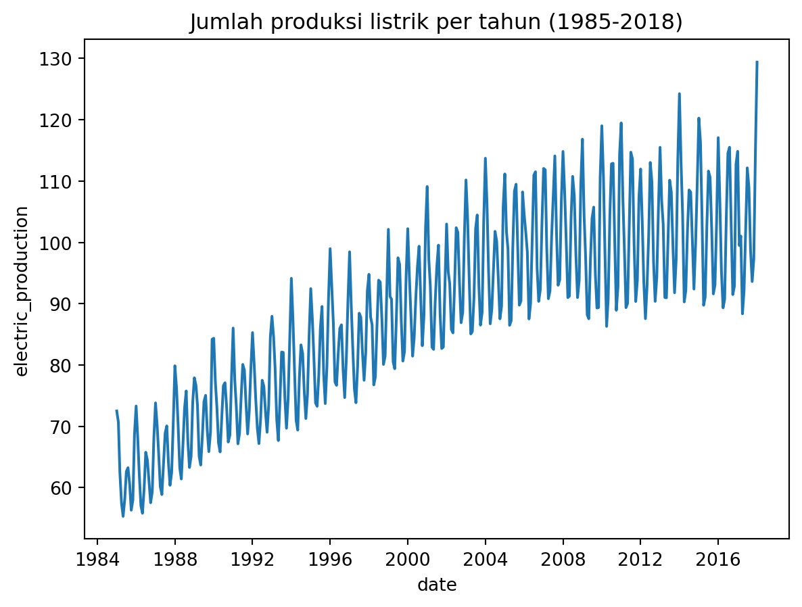
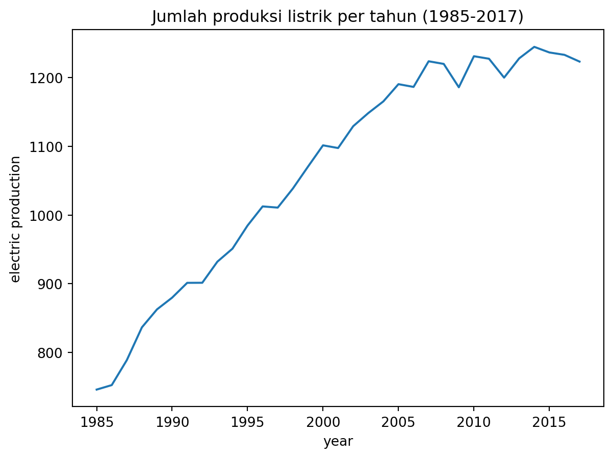

import numpy as npimport pandas as pdimport matplotlib.pyplot as pltimport seaborn as snsimport datetimedf = pd.read_csv('https://raw.githubusercontent.com/farhanage/dataset-for-study/main/Electric_Production.csv', names=['date', 'electric_production'], header=0)df.head(15)
Perhatikan bahwa kolom date memiliki tipe data object (string). Pada pertemuan ini, kita akan membahas suatu tipe data baru yang bernama datetime yang digunakan untuk memanipulasi data runtun waktu (time series).
Converting object to datetime
Perhatikan code cell berikut untuk mengubah data bertipe object menjadi datetime
# Mengubah data `object` -> `datetime`df['date'] = pd.to_datetime(df['date'], format='%m/%d/%Y')
Date Format
Argumen format='%m/%d/%Y' digunakan untuk membaca format penanggalan yang tertulis pada kolom yang ingin kita ubah. %d menandakan hari, %m untuk bulan, %y untuk tahun 2 digit dan %Y untuk tahun 4 digit.
Terlihat bahwa kolom date kini memiliki tipe data datetime64[ns].
df.head()
date
electric_production
0
1985-01-01
72.5052
1
1985-02-01
70.6720
2
1985-03-01
62.4502
3
1985-04-01
57.4714
4
1985-05-01
55.3151
Terlihat setelah dilakukan perubahan tipe data, format penanggalan pada kolom date juga berubah.
Apa perbedaan string dan datetime?
Object datetime memiliki attribut tanggal, bulan, waktu, hari, jam, menit, bahkan detik suatu observasi yang dapat kita akses melalui library datetime.
# Ambil tahun dari setiap observasidf['date'].dt.year
object datetime dapat digunakan sebagai nilai numerik dalam visualisasi data
sns.lineplot(x='date', y='electric_production', data=df)plt.title('Jumlah produksi listrik per tahun (1985-2018)')plt.show()

Grouping
Bagaimana cara kita memanfaatkan attribut-attribut datetime? Gunakan grouping method (groupby) untuk mendapatkan insight baru dari data per satuan waktu tertentu.
Informasi jumlah total produksi energi per tahunnya
df['electric_production'].groupby(df['date'].dt.year).sum() # sum of electric_production, grouped by year
sum_per_year = df['electric_production'].groupby(df['date'].dt.year).sum() # sum of electric_production, grouped by yearsns.lineplot(sum_per_year)plt.title('Jumlah produksi listrik per tahun (1985-2018)')plt.show()
kenapa tahun 2018 turun drastis? cek semua observasi pada tahun 2018
# Ambil data dengan tahun == 2018df[df['date'].dt.year ==2018]
date
electric_production
396
2018-01-01
129.4048
Ternyata tahun 2018 hanya memiliki 1 observasi, sehingga tidak dapat dibandingkan dengan jumlah produksi tahun-tahun sebelumnya.
# buang data tahun 2018df.drop(df[df['date'].dt.year ==2018].index, axis=0, inplace=True)
df[df['date'].dt.year ==2018]
date
electric_production
Data sudah berhasil dibuang, sehingga dapat dilakukan visualisasi yang lebih akurat
sum_per_year = df['electric_production'].groupby(df['date'].dt.year).sum() # sum of electric_production, grouped by yearsns.lineplot(sum_per_year)plt.xlabel('year')plt.ylabel('electric production')plt.title('Jumlah produksi listrik per tahun (1985-2017)')plt.show()

Interpretasinya?
avg_per_month = df['electric_production'].groupby(df['date'].dt.month).mean() # mean of electric_production, grouped by monthsns.barplot(avg_per_month)plt.xlabel('month')plt.ylabel('average electric production')plt.title('Rata-rata produksi listrik per bulan (1985-2017)')plt.show()
building_id - Foreign key for the building metadata.
meter - The meter id code. Read as {0: electricity, 1: chilledwater, 2: steam, 3: hotwater}. Not every building has all meter types.
timestamp - When the measurement was taken
meter_reading - The target variable. Energy consumption in kWh (or equivalent). Note that this is real data with measurement error, which we expect will impose a baseline level of modeling error. UPDATE: as discussed here, the site 0 electric meter readings are in kBTU.
building_metadata.csv
site_id - Foreign key for the weather files.
building_id - Foreign key for training.csv
primary_use - Indicator of the primary category of activities for the building based on EnergyStar property type definitions
square_feet - Gross floor area of the building
year_built - Year building was opened
floor_count - Number of floors of the building
weather.csv Weather data from a meteorological station as close as possible to the site.
site_id
air_temperature - Degrees Celsius
cloud_coverage - Portion of the sky covered in clouds, in oktas
dew_temperature - Degrees Celsius
precip_depth_1_hr - Millimeters
sea_level_pressure - Millibar/hectopascals
wind_direction - Compass direction (0-360)
wind_speed - Meters per second
Challenge : Gali informasi sebanyak-banyaknya dari data tersebut